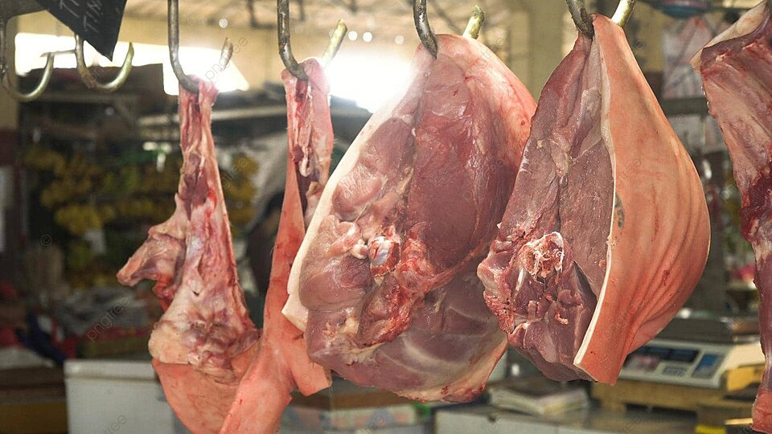

Craft Skills
Armourcraft
Armourcraft is the craft that allows individuals to craft, maintain, and repair armor. The skill requires
In order to create higher create high end armor the stats needed are as follows, listed in order of priority:
metalcraft
andleathercraft.
In order to create higher create high end armor the stats needed are as follows, listed in order of priority:
strength,
intelligence,
andconstitution.
Baking
 Baking is the skill that allows individuals to bake bread, pastries, and other desserts. If an individual is a baker then
Baking is the skill that allows individuals to bake bread, pastries, and other desserts. If an individual is a baker then COOKING
would be a good addition to a skill set. The two are not dependent on one another, but use the same attributes.Attributes for baking are as follows, listed in order of priority:
INTELLIGENCE
andWILLPOWER.
Armourcraft
 Brewing is the skill that allows an individual to create beers, lagers, wines, meads, and more alcoholic beverages. Brewers will need help from individuals
who use the
Brewing is the skill that allows an individual to create beers, lagers, wines, meads, and more alcoholic beverages. Brewers will need help from individuals
who use the FARMING
and/orFORAGING
skills.Primary attributes for brewing, listed in order of importance are:
INTELLIGENCE
andWILLPOWER.
Butchering

Butchery is the skill that allows an individual to skin carcasses and carve the meat from corpses. Butchering often goes well with
Primary attributes for butchering, listed in order of importance are:
HUNTING.
Primary attributes for butchering, listed in order of importance are:
INTELLIGENCE
andDEXTERITY.
Cooking
Cooking is the skill that allows an individual to properly cook meats, vegetables, stews, and more! Often, individuals with the cooking skill will want to also
have
Primary attributes for cooking, listed in order of importance are:
BAKING.
Primary attributes for cooking, listed in order of importance are:
WILLPOWER,
CONSTITUTION
, andINTELLIGENCE.
Farming
Farming is the skill that allows an individual to work, plant, tend, and harvest fields. Livestock farming also comes with this skill where an individual
can tend cows, chickens, pigs, goats, etc.
Primary attributes for cooking, listed in order of importance are:
Primary attributes for cooking, listed in order of importance are:
WILLPOWER,
CONSTITUTION,
andINTELLIGENCE.
Foraging
Foraging is the skill that allows an individual to find plants in the wild, pick out trees, harvest bark, leaves and more. Foraging is a widely needed skill for
almost every other skill set.
Primary attributes for foraging, listed in order of importance are:
BREWING
> and dyes forTEXTILECRAFT
are highly dependent on this skill.Primary attributes for foraging, listed in order of importance are:
INTELLIGENCE
andDEXTERITY.
General
General skills are skills and crafts that all individuals have. These skills are crafts that might include roasting meat, fish, etc. However, the quality will
be worse than that of skilled crafts. There are no particular attributes assigned to this skill set but it provides useful crafts none-the-less.
Hunting
Hunting is the skill to actively bait and trap animals. While some animals can be found and hunted as they roam in the wild, hunting allows for individuals to
bait animals they are wanting to find.
Primary attributes for hunting, listed in the order of importance are:
BUTCHERING
is a skill set that would be useful for hunters so that the pelts can be successfully removed from dead animals.Primary attributes for hunting, listed in the order of importance are:
WILLPOWER,
INTELLIGENCE,
andDEXTERITY.
Jewelcraft
Jewelcrafting is a skill that allows an individual to work with precious metals and stones. The crafter will be able to create necklaces, pendants, charms,
rings, and more. In order to become a jewelcrafter, an individual must have the skill of
Primary attributes for jewelcrafting, listed in order of importance are:
METALCRAFTING.
Primary attributes for jewelcrafting, listed in order of importance are:
DEXTERITY
andINTELLIGENCE.
Leathercraft
Leathercrafting is a skill that allows an individual to work with raw hides and pelts then turn the raw goods into usable armour, clothing, boots, or more.
Additional skills that would go along with leathercrafting include:
Primary attributes for leathercraft, listed in order of importance are:
HUNTING
andBUTCHERING
for finding pelts,ARMOURCRAFT
to make leather armour, andTEXTILECRAFT
for dyes.Primary attributes for leathercraft, listed in order of importance are:
DEXTERITY
andINTELLIGENCE.
Medicine
 Medicine is a skill that is required for proper treatment of wounded and sick patients. In order to find materials to make medicine, a crafter will also
need
Medicine is a skill that is required for proper treatment of wounded and sick patients. In order to find materials to make medicine, a crafter will also
need FORAGING.
Primary attributes for medicine, listed in order of importance are:
INTELLIGENCE
andWILLPOWER.
Metalcraft
Metalcraft is the skill that allows for basic metal bending. Grommets, rivets, bowls, cutlery and tools are all made from metalcraft. Other crafts will open up
when metalcraft is learned. Those skills include:
Primary attributes for metalcraft, listed in order of importance are:
ARMOURCRAFT, WEAPONCRAFT,
andJEWELCRAFT.
Primary attributes for metalcraft, listed in order of importance are:
INTELLIGENCE, CONSTITUTION,
andSTRENGTH.
Stonecraft
Stonecraft is the skill that allows for an individual to make shelves, jars, jugs, vases. Stonecrafters will use both limestone and clay to make items. Some
items created with stonecraft will be chiseled in separate pieces. Those pieces will then need to be carried to the location where the piece of furniture is to
be built. Once the furniture is built in a room, it cannot be moved.
Primary attributes for metalcraft, listed in order of importance are:
Primary attributes for metalcraft, listed in order of importance are:
CONSTITUTION, STRENGTH,
andINTELLIGENCE.
Textilecraft
Textilecraft is the skill that allows for an individual to work with wool, silk, and make dyes.
Primary attributes for textilecraft, listed in order of importance are:
FORAGING
is a skill that would come in useful for textilecraft.Primary attributes for textilecraft, listed in order of importance are:
INTELLIGENCE, WILLPOWER,
andADEXTERITY.
Weaponcraft
Weaponcraft is the skill in which an individual will create weapons of all varieties.
Primary attributes for weaponcraft, listed in order of importance are:
METALCRAFT
is required in order to select weaponcraft. In addition,WOODCRAFT
is highly suggested. At higher levels, weaponsmiths will be able to create weapons out of Gondorian-Steel.Primary attributes for weaponcraft, listed in order of importance are:
CONSTITUTION, STRENGTH,
andINTELLIGENCE.
Woodcraft
Woodcraft is the skill in which an individual will work wood into usable furniture, practice weapons, bins, and other wooden items. Other skills that might be
useful with woodcraft include:
Primary attributes for weaponcraft, listed in order of importance are:
FORAGING
and/orWEAPONCRAFT.
Primary attributes for weaponcraft, listed in order of importance are:
INTELLIGENCE, DEXTERITY,
andSTRENGTH.